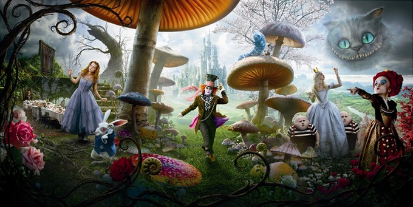

Tim Burton
23 de Abril de 2010
Ainda garotinha, Alice Kingsleigh visitou um lugar mágico pela primeira vez e não tinha mais lembranças sobre o local a não ser em seus sonhos. Em uma festa da nobreza, a jovem vê um coelho branco e o segue,caindo em um buraco, indo parar em um mundo estranho: o País das Maravilhas. Lá, ela reencontra personagens que estavam guardados em sua memória através dos sonhos.